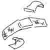
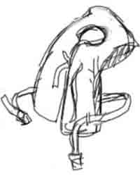
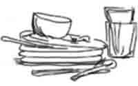
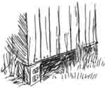
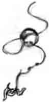
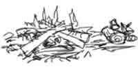
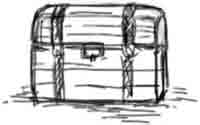

You are going to spend the day at Uncle Billy’s ranch where all the cousins are gathered for a family reunion. Will you follow Jesus’ way, or your own?
The Choice is Yours
1. When you arrive, Alice, Fred, and Willy invite you to join them on a hike through the back woods.
- You decide to go along. Go to #2.
- You stay behind and join the volleyball game on the front lawn. Go to #12.
2. The woods are full of sticks and briars, and you get your legs scratched. The others are leaving you behind.
#3. After a while you catch a fish, but since you were selfish, you don’t feel as happy as you thought you would. Cousin Samuel hasn’t caught anything, and you notice his line is tangled up.
- You offer to help him. Go to #30.
- You give him your pole. Go to #7.
- You take your fish to Uncle Billy. Go to #20.
#4. The little children begin running around the house, yelling. You go with them to play games outside. When you are playing Red Rover, Amy trips and scrapes her knee. None of the moms are around to help.

- You go find someone to help Amy. Go to #31.
- You wash her scrape with the hose and put on a Band-Aid. Go to #29.
- You ignore her, and continue playing. Go to #17.
#5. You find Uncle Billy getting the fishing poles out, and decide to go fishing. Several other cousins come, and there are not enough fishing poles.
- You share yours with your younger brother. Go to #23.
- Since you were there first, you decide to keep on fishing with the pole you have. Go to #3.

#6. Alex lets you get off onto the dock, but when you come back with a life-jacket, he is out in the middle of the pond with the boat.
- You sit on the dock for several minutes until he comes back to pick you up, then you row around the pond together. Go to #22.
- You decide to find Uncle Billy instead. Go to #20.
#7. You watch some of the others fishing. After a while Mark lets you use his pole and you soon catch a big fish! Aunt Mabel cooks it for supper. You love fish.
#8. Mom gives you a hug and suggests helping with the toddlers if you want something quiet to do.
#9. You and Alex manage to get back to the dock, and you dry off in the sun. Then you both go find Uncle Billy. Go to #20.
#10. As you hike along together, you come to a fence. The others want to cross it, but Uncle Billy warned you not to last time you were here.
- You go with the others anyway. Go to #14.
- You tell the others what Uncle Billy said. Go to #13.
- You return to the house by yourself. Go to #4.
#11. You stay longer than you planned, and when you get back to the house, you found out you missed the special marshmallow roast. THE END.
#12. As you are playing, some of the big cousins say that you are too small to be on their team.
- You go tell Mom. Go to #8.
- You go off to find something else to do. Go to #5.
- You stick around to watch. Go to #21.
#13. Alice agrees to go back to the house with you, but the others continue on. You find Uncle Billy beside the woodshed. Go to #20.

#14. As you cross a pasture, a mean-looking cow starts coming your way. As you try to get back to the fence, you rip your clothes on some wire, and fall in the mud. Go to #24.
#15. As you are leaving the dock, you remember that you are supposed to wear a life-jacket.
- You decide to be careful and keep going. Go to #22.
- You remind Alex about wearing life-jackets. Go to #6.
#16. Uncle Billy makes a campfire, and calls all the cousins together. Go to #25.

#17. Mom sees you sitting around, so she calls you in to wash dishes. You have a grumpy attitude and get disciplined. You know you deserve it, and ask Jesus to help you do the right thing from now on. Go to #7.
#18. Though it is a tight squeeze, and you get dirty, you are able to get the ball. Everyone is happy, and you decide to go wading in the creek to cool off. Go to #26.
#19. You don’t know how to swim, but you manage to grab hold of the boat before it floats away. Uncle Billy hears you call and rescues both of you. Go to #24.
#20. Uncle Billy asks you to haul some wood for him, which you don’t like to do.
- You decide to help cheerfully. Go to #16.
- You decide to join several of the others playing catch. Go to #21.

#21. Soon the ball rolls under an old shed. The space is only big enough for you to crawl in, so the others ask you to get it. It looks dark and scary.
- You decide to be brave and try to get the ball. Go to #18.
- You tell them you don’t want to. Go to #29.
#22. As you get near some branches that are hanging over the water, Alex decides he wants to try climbing up them into the trees. He steps on the edge of the boat and it tips over, tossing you both into the water.

#23. Little brother wants to go first. He has never fished before, so he asks you to show him how. When you get the hook baited, he keeps pulling it up to see if he’s caught anything.
- You patiently keep trying to help him. Go to #30.
- You take the pole away and fish without him. Go to #3.
- You go inside to play with the little children. Go to #4.
#24. You have to have a bath, and stay in the house the rest of the day because you disobeyed the rules. THE END
#25. Everyone gathers together for singing around the campfire. For a treat you all roast marshmallows! THE END.
#26. Soon you hear the bell ring, which means come to the house.
- You decide to keep wading a little longer because you want to see what is around the next bend. Go to #11.
- You hurry back to the house. Go to #25.

#27. Now you have a stomachache and don’t feel well enough to enjoy the campfire and roasted marshmallows that everyone else is enjoying. THE END.
#28. You get a small piece, but it tastes very good. Several others thank you for sharing your fish. Go to #16.
